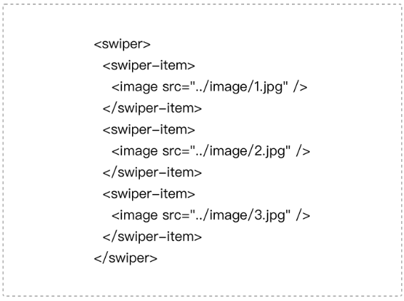

from developers.weixin.qq.com:
代码调试是开发者工具的最主要的功能之一，包括界面调试和逻辑调试。nw.js对<webview/>提供打开Chrome Devtools调试界面的接口，使得开发者工具具备对小程序的逻辑层和渲染层进行调试的能力。同时为了方便调试小程序，开发者工具在Chrome Devtools的基础上进行扩展和定制。
代码清单10-3 如何调试webview
// 用于渲染的webview
var webview = document.createElement('webview')
//用于显示调试器的WebView
var devtoolsWebView = document.createElement('webview')
// 显示调试器
webview.showDevTools(ture, devtoolsWebView)
开发者工具上显示的调试器是调试逻辑层WebView，主要使用Chrome Devtools的Sources面板调试逻辑层JS代码。
Chrome Devtools自带的Element面板并不能调试当前渲染层页面的节点（实际上是调试逻辑层WebView的节点），所以我们通过在devtoolsWebView中注入脚本的方式将Chrome Devtools的Element面板隐藏，同时开发了Chrome Devtools插件WXML 面板（可以参考如何开发Chrome 插件，本文不做展开），用于展示渲染层界面调试的用户交互界面。
开发者工具会在每个渲染层的WebView中注入界面调试的脚本代码，负责获取WebView中的DOM树、获取节点样式、监听节点变化、高亮选中节点、处理界面调试命令。并将界面调试信息通过WebSocket 经由开发者工具转发给WXML面板进行处理。
如图10-11及图10-12所示，开发者写的WXML源码与真实的DOM树之间存在较大的差异，需要经过一个最小树算法，如图10-13所示，将非小程序组件节点剔除后才能呈现出与WXML源码一致的效果。

图9-11 WXML源码

图9-12 真实的DOM树

图9-13 最小树算法示例

图9-14 WXML面板的最终效果
最后一次编辑于 2019年08月19日 （未经腾讯允许，不得转载）